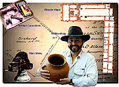

| During July and August, 2000, Dr. Ruben Mendoza coordinated six student
technicians in the development of a multimedia-based history of the Old
Mission and community of San Juan Bautista, California. The CD-ROM
contains over 50 individual screens of art, archaeology and history, 200
images, video, audio (including oral history), slide shows, time-lines,
an architectural history, recent archaeology reports, mission records,
and seven tracks of original mission music. To obtain a copy of the
CD-ROM, titled "Old San Juan: The
Art, Archaeology, and History of an Early California Community," please
contact Ruben Mendoza at ruben_mendoza@monterey.edu
or by phone at 831-582-3760. Copies may obtained through the Gift
Shop at Old Mission San Juan Bautista. Proceeds from the sale of
the CD-ROM will support mission restoration and student projects. |
 |
 Have
you ever wanted to do archaeology but didn’t know where to start? Are you
an archaeology student who desires an authentic hands-on lab and field
learning experience before you graduate? Or, do you have a desire to experience
and discover California history for yourself? If your answer is yes to
any of these questions, then the CSU Monterey Bay summer field program
in archaeology is for you! Summer
Field Program in Archaeology: SBSC260s/360s, June 4th to June 29th, 2001.
Summer 2001: Old Mission San Juan Bautista, California.CSU Monterey Bay
DLEE Registration Form, 100 Campus Center, Seaside, CA 93955-8001; Fax:
831-582-3741; E-mail: dlee.monterey.edu;
online registration forms at: http://dlee.monterey.edu.
See announcement for further
details! Or, please download our brochure HERE.
Have
you ever wanted to do archaeology but didn’t know where to start? Are you
an archaeology student who desires an authentic hands-on lab and field
learning experience before you graduate? Or, do you have a desire to experience
and discover California history for yourself? If your answer is yes to
any of these questions, then the CSU Monterey Bay summer field program
in archaeology is for you! Summer
Field Program in Archaeology: SBSC260s/360s, June 4th to June 29th, 2001.
Summer 2001: Old Mission San Juan Bautista, California.CSU Monterey Bay
DLEE Registration Form, 100 Campus Center, Seaside, CA 93955-8001; Fax:
831-582-3741; E-mail: dlee.monterey.edu;
online registration forms at: http://dlee.monterey.edu.
See announcement for further
details! Or, please download our brochure HERE.